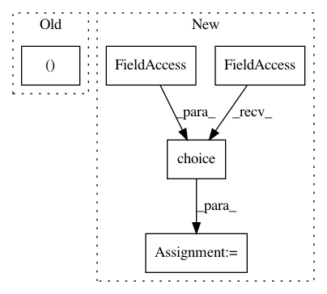

070003f70129fd8dd88364df6d2ae64c1d2a35f8,spynnaker/pyNN/models/neural_projections/connectors/fixed_number_post_connector.py,FixedNumberPostConnector,_get_post_neurons,#FixedNumberPostConnector#,28
Before Change
j = int(self._rng.next(
n=1, distribution="uniform",
parameters=[0, self._n_post_neurons]))
(permutation[i], permutation[j]) = (
permutation[j], permutation[i])
n += self._n_post_neurons
if self._post_neurons is None:
After Change
// Loop over all the pre neurons
for m in range(0, self._n_pre_neurons):
if self._post_neurons[m] is None:
self._post_neurons[m] = numpy.random.choice(
self._n_post_neurons, self._n_post, False)
self._post_neurons[m].sort()
// This looks nice but it doesn"t work with PyNN 0.9 ?
// n = 0
In pattern: SUPERPATTERN
Frequency: 4
Non-data size: 5
Instances
Project Name: SpiNNakerManchester/sPyNNaker
Commit Name: 070003f70129fd8dd88364df6d2ae64c1d2a35f8
Time: 2017-11-24
Author: andrew.gait@manchester.ac.uk
File Name: spynnaker/pyNN/models/neural_projections/connectors/fixed_number_post_connector.py
Class Name: FixedNumberPostConnector
Method Name: _get_post_neurons
Project Name: theislab/scanpy
Commit Name: cd93c5446a236ed76456b188579e671d0619f333
Time: 2017-07-21
Author: f.alex.wolf@gmx.de
File Name: scanpy/preprocessing/simple.py
Class Name:
Method Name: subsample
Project Name: analysiscenter/batchflow
Commit Name: cff08af33167150ec2e0717db391c7b8af49de22
Time: 2020-04-07
Author: nikita_007_94@mail.ru
File Name: batchflow/sampler.py
Class Name: HistoSampler
Method Name: sample
Project Name: analysiscenter/batchflow
Commit Name: 2957144417620c5f24282051414ec44201c827a9
Time: 2020-03-04
Author: Tsimfer.SA@gazprom-neft.ru
File Name: batchflow/sampler.py
Class Name: HistoSampler
Method Name: sample